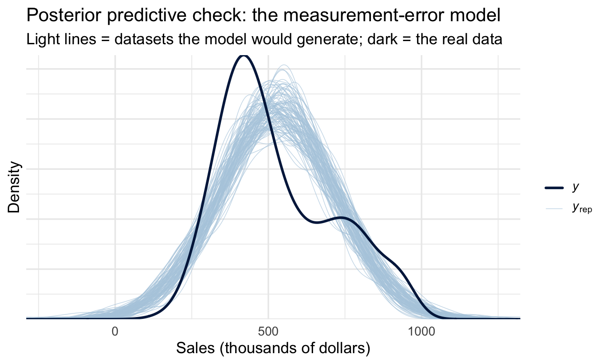
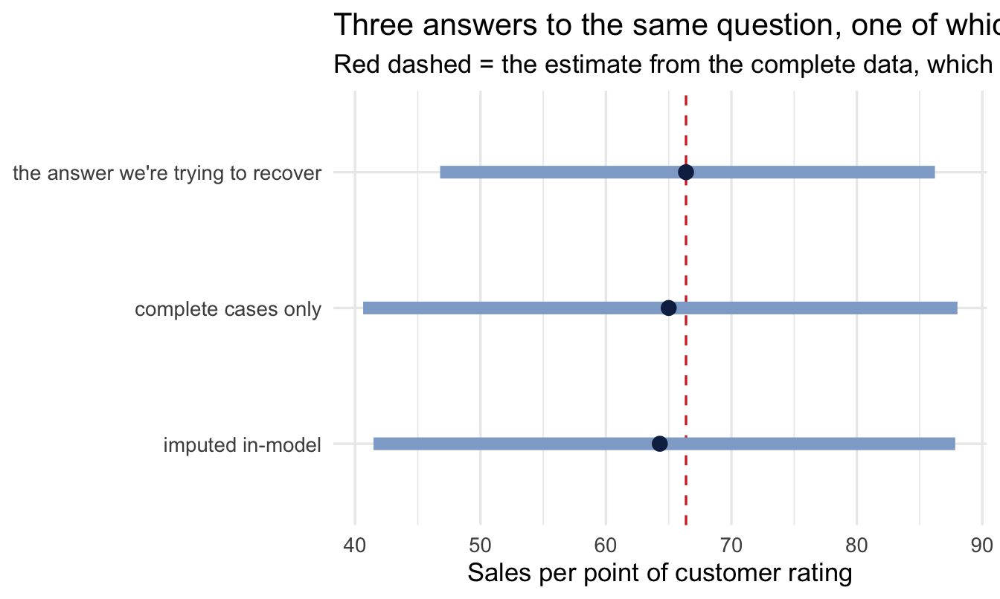

library(tidyverse)
library(peopleanalyticsdata)
library(brms)
library(tidybayes)
theme_set(theme_minimal(base_size = 13))
set.seed(2026)
# Shared colour tokens (matching theme/academicdesign*.scss). Navy and light
# navy carry the data; red is reserved for reference lines and annotations,
# never for a second data series.
navy <- "#122a52"
navy_light <- "#8fabd0"
red <- "#d32f2f"
data("salespeople", package = "peopleanalyticsdata")
data("employee_survey", package = "peopleanalyticsdata")19 Modelling What You Can’t See: Measurement Error, Missing Data & Latent Variables
Welcome
Every model in this book so far has quietly assumed something that is almost never true: that the numbers in the columns are the quantities they claim to be. That an engagement score of 3.4 is the person’s engagement. That a performance rating of 4 is their performance. That one salesperson’s 26 months of tenure is the same 26 months as somebody else’s.
They aren’t. Every one of those numbers is a measurement of something you can’t observe directly, taken with an instrument of limited quality, and the gap between the two is not small. The meta-analytic literature puts the inter-rater reliability of supervisor performance ratings at around 0.52 — meaning that when two managers rate the same person, roughly half the variance in the rating has nothing to do with the person being rated.
That’s not a caveat. Half your data being noise changes what your models can and can’t find, and in a specific and predictable direction.
This chapter is about what to do when you don’t observe your variables exactly. It has two halves that look unrelated and are the same problem: measurement error (you observe the variable, but wrongly) and missing data (you don’t observe it at all). The Bayesian treatment of both is identical in spirit — if you don’t know a value, put a distribution on it and let it stay uncertain — and it’s one of the places where this framework does something the alternatives genuinely struggle to.
Important
The core idea in one sentence: an unobserved quantity is just another parameter — give it a model rather than a guess.
What you’ll be able to do by the end
- Explain what a reliability coefficient means in units you can use
- Predict the direction and size of attenuation — why measurement error in a predictor drags its coefficient toward zero
- Fit a model that accounts for a known measurement error using
brms::me(), and read the difference - Distinguish noise from bias, and explain why calibration sessions address the smaller of the two problems
- Name the three missingness mechanisms and say which one your data is plausibly in
- Impute missing values inside the model with
brms::mi(), so the uncertainty propagates instead of disappearing - Recognise when the thing you want to measure is latent, and know what to read next
19.1 Setup
Note what we haven’t done: drop_na(). Every previous chapter opened by quietly discarding incomplete rows. This one is about what that costs.
20 Part 1 — Measurement error
20.1 Not every wrong number is wrong in the same way
Those three examples fail in three different ways, and they do not have the same fix. Separating them now saves a great deal of confusion later.
A number can be noisy. Ask two managers to rate the same person and you get two answers. Ask the same manager twice and you may still get two answers. What is recorded is the real value plus something random, and the something random has no particular direction. Engagement scores and performance ratings are both this. It is the only one of the three with a statistical fix, and it is what most of this chapter is about.
A number can mean something other than what you assume. Tenure is recorded exactly — there is no noise in a start date. But is it continuous service, service in role, or service with the group? Does an acquisition reset it? A career break? Does everyone hired before the 2015 system migration share a start date, because that is when the field was created? These errors are systematic rather than random, so no amount of modelling averages them away. You fix the definition, or you flag the affected rows and say so.
A number can cover different amounts of the world. Two people each have 26 months of tenure, and those 26 months contain different numbers of working days. Not by much, but by more than you would guess. Simulate it — everybody on exactly 26 months, only the start date varying — and the working days run from about 547 to 562, a fifteen-day spread with a standard deviation of around three and a half days. Weekday alignment accounts for only two of those; the rest is public holidays, because a 26-month window catches either two or three of each annual holiday depending on which month you started.
The clearer version of the same problem is monthly reporting. Comparing February’s sales against March’s compares 28 days with 31 — around 10% — before anybody has done anything differently. The number is exact. The unit is not constant.
20.1.1 Does that matter? The arithmetic says it depends
This is worth a moment, because the answer is not “yes” or “no” and the thing that decides it is the same ratio the next section is about: how much of the variation you see is real, and how much is the calendar.
| What you are comparing | Reliability of “months” | Effect on a coefficient |
|---|---|---|
| A whole workforce, tenure 1 month to 20 years | 0.9999 | 0.01% — ignore it |
| One cohort, everybody around 26 months | 0.96 | about 4% |
| February against March | ≈ 0 | the calendar is the finding |
Across a real workforce, genuine differences in tenure are so much larger than three days that the jitter disappears. Narrow the comparison and it grows. Compare one month with another and there is nothing left but calendar.
Important
Two things make this different from the noise in a rating, and both point to the same conclusion.
You can work out the true value. Nobody knows a person’s real engagement, which is why the rest of this chapter models it. But working days are computable from a start date. When the truth is recoverable, recover it — do not model the error in a number you could simply calculate correctly.
It is systematic, not random. Two people who started in the same month share the same distortion. That is harmless if start dates are scattered, and dangerous if they are not: in an organisation that hires seasonally, start month is tangled up with role, contract type and department. At that point the calendar stops being noise that shrinks your estimate a little and becomes bias that pushes it in a direction.
So the rule is use the right unit, and that means one of two things. Sometimes it is an offset, as in Chapter 15 — a manager with thirty reports has more opportunity than one with five, so transfer counts were divided through by team size before anyone compared managers. Sometimes it is simply computing working days instead of months. Either way you are removing the problem rather than modelling it, which is always the better trade when it is available.
20.2 What reliability actually means
The standard model is deliberately simple. An observed score is a true score plus an error:
x_{\text{observed}} = x_{\text{true}} + \varepsilon
and reliability is the share of the observed variance that comes from the true score:
r = \frac{\mathrm{Var}(x_{\text{true}})}{\mathrm{Var}(x_{\text{observed}})}
That definition is more useful than it looks, because it converts a reliability coefficient into a standard deviation you can reason about. If true performance had a standard deviation of 15 points and ratings are 0.52 reliable, then the observed variance is 225 / 0.52 \approx 433, the error variance is the difference, and the error has a standard deviation of about 14.4 points:
sd_true <- 15
reliability <- 0.52
sd_observed <- sd_true / sqrt(reliability)
sd_error <- sqrt(sd_observed^2 - sd_true^2)
tibble(sd_true, reliability, sd_observed, sd_error)# A tibble: 1 × 4
sd_true reliability sd_observed sd_error
<dbl> <dbl> <dbl> <dbl>
1 15 0.52 20.8 14.4The noise in a single performance rating is almost exactly as large as the real differences between people. Put another way: a one-rating-point gap between two employees is close to a coin flip.
Important
This is the number to keep in your head for the rest of the chapter. Not “ratings are imperfect” — everyone agrees with that and then models as if they weren’t. The error is the same size as the signal.
TipFor the ML/DS crowd
The closest familiar idea is label noise, with one important difference: noise in the labels mostly costs you accuracy, while noise in the features costs you interpretability in a directional way. A model trained on noisy features can still predict well — it just can’t tell you how much each feature matters, because every coefficient has been shrunk by that feature’s reliability.
This has a practical consequence for feature-importance work. If you rank features by SHAP value or permutation importance and one feature is measured with a much noisier instrument than the others, you have ranked your measurement quality as much as your signal. Well-instrumented features (system-logged: tenure, absence days, headcount) will systematically outrank survey- or judgement-derived ones (engagement, performance, potential) regardless of which actually matters — because the first group has no noise to attenuate them, whatever else may be wrong with it.
20.3 Attenuation: where your effect went
Measurement error in a predictor doesn’t just add noise. It biases the coefficient, systematically, toward zero. This is the single most practically important fact in the chapter and it’s easy to demonstrate.
- 1
- Standardised, so the coefficient below is directly readable.
- 2
- The true effect is 0.5. Half a standard deviation of outcome per standard deviation of engagement — a large effect by People Analytics standards.
- 3
-
With
sd(true) = 1, this is the error SD implied by a reliability of 0.52 — the same arithmetic as the block above, rearranged.
bind_rows(
slope_of(lm(outcome ~ true_engagement, data = attenuation),
"true_engagement", "if we could measure it perfectly"),
slope_of(lm(outcome ~ measured, data = attenuation),
"measured", "using the score we actually have")
)# A tibble: 2 × 3
model estimate se
<chr> <dbl> <dbl>
1 if we could measure it perfectly 0.490 0.0162
2 using the score we actually have 0.260 0.0120The estimate falls from 0.5 to roughly 0.26 — and there’s nothing approximate about that number. The attenuated slope is the true slope multiplied by the reliability, and 0.5 × 0.52 = 0.26. Measurement error doesn’t blur the answer; it shrinks it by a factor you can calculate.
Code
sweep <- tibble(r = seq(0.2, 1, by = 0.02)) |>
mutate(
estimate = map_dbl(r, \(rel) {
m <- true_engagement + rnorm(n, sd = sqrt((1 - rel) / rel))
coef(lm(outcome ~ m))[["m"]]
})
)
ggplot(sweep, aes(r, estimate)) +
geom_hline(yintercept = 0.5, linetype = "dashed", colour = red) +
geom_line(colour = navy, linewidth = 1) +
geom_vline(xintercept = 0.52, linetype = "dotted", colour = "grey50") +
annotate("text", x = 0.52, y = 0.12, hjust = -0.08, size = 3.2,
colour = "grey40", label = "typical performance rating") +
labs(
title = "How much of your effect survives your measurement",
subtitle = "Red dashed = the true effect of 0.5",
x = "Reliability of the predictor", y = "Estimated coefficient"
)
ImportantThe consequence nobody draws
If your engagement survey has a reliability of 0.7 and your performance rating has a reliability of 0.52, and you regress one on the other, you are not measuring a weak relationship between engagement and performance. You are measuring a strong relationship between two noisy proxies, and reporting the product.
“Engagement explains surprisingly little of performance” is one of the most-repeated findings in the field. Some of it is real. A good deal of it is arithmetic.
NoteA different lens: this problem has two older names
Psychometrics has had a fix since 1904: Spearman’s correction for attenuation divides the observed correlation by the square root of the product of the two reliabilities. Econometrics knows the same problem as errors-in-variables or classical measurement error, and reaches for instrumental variables when the error is in a regressor.
Both work, and both are worth knowing. What neither gives you is uncertainty that accounts for the correction itself. Spearman’s formula returns a point estimate corrected by another point estimate; the resulting number has a confidence interval that is quietly wrong, because the reliability coefficient was itself estimated. The Bayesian version below treats the true score as an unknown parameter, which means the uncertainty about what people’s real scores are shows up where it belongs — in a wider posterior — rather than being corrected away.
20.4 The Bayesian version
brms handles this directly. If you can supply a standard error for each observation of a noisy predictor, me() treats the true value as a parameter to be estimated rather than a number to be trusted.
NoteA worked (illustrative) example
salespeople gives us one customer rating per person with no indication of how it was produced. Suppose — and this is the kind of thing you’d establish from the survey vendor, not invent — that each rating is the mean of a handful of customer responses, so each carries a standard error we can estimate:
salespeople_me <- salespeople |>
drop_na(sales, customer_rate, performance) |>
mutate(
customer_rate_c = customer_rate - mean(customer_rate),
1 customer_rate_se = 0.45
)- 1
- Illustrative, and deliberately a single number rather than a column — in real work this varies by person, because some people have more responses behind their score than others. The people with the fewest responses are exactly the ones whose scores need the most discounting, which is the Chapter 14 argument arriving by a different route.
The model is the Chapter 6 skeleton with one term wrapped. We fit the naive version alongside it, because the comparison is the whole point:
priors <- c(
1 prior(normal(400, 200), class = Intercept),
prior(normal(0, 100), class = b),
prior(exponential(0.005), class = sigma)
)
fit_naive <- brm(
sales ~ customer_rate_c,
data = salespeople_me, family = gaussian(),
prior = priors,
chains = 4, iter = 2000, seed = 18, refresh = 0
)
fit_me <- brm(
2 sales ~ me(customer_rate_c, customer_rate_se),
data = salespeople_me, family = gaussian(),
prior = priors,
chains = 4, iter = 2000, seed = 18, refresh = 0,
3 save_pars = save_pars(latent = TRUE)
)- 1
-
Chapter 6’s priors, unchanged. The only difference between these two models is
me(). - 2
- The one wrapped term. Everything else is identical to the line above.
- 3
- Keeps the estimated true scores in the fitted object. You don’t need them for the coefficient, but they’re worth looking at once — each person now has a posterior for what their rating “really” was.
Before reading anything off it, the two checks the workflow asks for. me() adds a latent true score for every observation, so the parameter count jumps from three to several hundred — which makes step 7 less of a formality than usual:
pp_check(fit_me, ndraws = 100) +
labs(title = "Posterior predictive check: the measurement-error model",
subtitle = "Light lines = datasets the model would generate; dark = the real data",
x = "Sales (thousands of dollars)", y = "Density")
Note
Watch Rhat and ESS on this one in particular. A latent variable per observation is a large, weakly-identified posterior, and it is common for the true-score parameters to mix poorly even when the coefficient you care about is fine. Chapter 11’s remedy applies: more iterations first, then adapt_delta.
me_comparison <- bind_rows(
fit_naive |> gather_draws(b_customer_rate_c) |>
median_qi(.width = 0.95) |> mutate(model = "taking the rating at face value"),
fit_me |> gather_draws(`bsp_.*`, regex = TRUE) |>
median_qi(.width = 0.95) |> mutate(model = "allowing for measurement error")
) |>
mutate(width = .upper - .lower)
me_comparison |>
select(model, estimate = .value, .lower, .upper, width)# A tibble: 2 × 5
model estimate .lower .upper width
<chr> <dbl> <dbl> <dbl> <dbl>
1 taking the rating at face value 69.5 49.2 89.9 40.7
2 allowing for measurement error 92.7 64.5 121. 56.3Two things to notice, and the second is the one people miss. The coefficient is larger than the naive version, because we’ve undone some of the attenuation. And the interval is wider, because we’ve stopped pretending we know each person’s rating exactly. Both directions are correct. A method that made the estimate bigger and more precise would be selling you something.
Both of those are much easier to see than to read:
Code
ggplot(me_comparison, aes(x = .value, y = fct_rev(factor(model)))) +
geom_vline(xintercept = 0, linetype = "dotted", colour = "grey50") +
geom_linerange(aes(xmin = .lower, xmax = .upper),
colour = navy_light, linewidth = 3) +
geom_point(colour = navy, size = 3) +
labs(
title = "What allowing for measurement error does to the estimate",
subtitle = "Point = posterior median; bar = 95% credible interval",
x = "Sales per point of customer rating", y = NULL
)
This is the shape to commit to memory, because it is what an honest correction looks like: the point moves out, away from zero, and the bar gets longer. Any technique that claims to remove bias should be expected to cost you precision, and one that doesn’t is worth being suspicious of.
It’s also the reason this comparison belongs on a chart rather than in the table above. Two rows of numbers invite the reader to look at the estimates and skip the interval widths — which inverts the lesson, because the widths are the half that’s easy to forget.
ImportantCheck the sampler here more carefully than usual
Every model in this chapter is harder to fit than anything before it, and this is the one place in the book where Chapter 10’s step 6 is more than a formality.
The reason is structural. me() adds one latent parameter per observation — 350-odd unknown “true” customer ratings, each informed by a single noisy measurement — and mi() does the same for every missing value. Models with a parameter per row are inherently harder to explore than models with five parameters, and they can look fine while quietly sampling badly.
summary(fit_me) # scan Rhat and Bulk_ESS on the bsp_ row
plot(fit_me, variable = "bsp_mecustomer_rate_ccustomer_rate_se")Two things to watch, and neither shows up in the coefficient table:
- Divergent transitions.
brmswarns about these on fitting, and the warning is easy to scroll past in a rendered document. Divergences on a measurement-error model usually mean the stated standard error is too small relative to the spread in the data — the model is being asked to believe the ratings more precisely than the likelihood can support. - Low
Bulk_ESSon thebsp_coefficient specifically. The latent scores and the coefficient trade off against each other, which is the same ridge-walking problem Chapter 22 diagnoses in its event-study model. More iterations is the first response; a tighter prior onsigmais the second.
The uncomfortable implication for the comparison above: if the me() model sampled poorly, its wider interval might be the sampler’s uncertainty rather than the measurement error’s. Those look identical in the chart, and only the diagnostics distinguish them.
20.4.1 Noise and bias are not the same problem, and HR works on the wrong one
Almost all organisational effort on rating quality targets bias — systematic, directional error. The lenient manager who rates everyone highly, the severe one, the halo effect, recency. Calibration sessions exist to align distributions across managers, and they work: bias is systematic, so it can be identified and corrected.
Noise is the unsystematic part — the same manager rating the same person differently on a different day, two managers disagreeing for reasons that have nothing to do with the employee. Kahneman, Sibony and Sunstein’s Noise documents across many professional judgement domains that noise is typically the larger of the two, and calibration does essentially nothing about it. The only real remedies are structural: multiple independent raters, averaged; or a model that shrinks extreme ratings toward the population (Chapters 14 and 15).
The practical version: the bottom 5% of a rating distribution is not the bottom 5% of performers. At a reliability of 0.52 it’s a mixture of genuinely weak performers and people who had a bad year, a new manager, or a hard project. Managing out on that basis is not selecting against poor performance so much as partly selecting against bad luck.
NoteThis connects backwards to Chapter 15
Shrinkage and measurement-error correction are the same operation applied at different ends of the model. Chapter 15 shrank noisy outcome estimates toward the population mean, in proportion to how little data each manager had. me() does the same thing to a noisy predictor, in proportion to its stated error.
Both answer “how much should I trust this number?” with a quantity rather than a judgement call. If Chapter 15 made sense, this chapter is the same idea pointed in the other direction.
21 Part 2 — Missing data
21.1 What drop_na() has been doing
Every chapter so far has opened with a line like this:
salespeople <- salespeople |> drop_na()In Chapter 1 that was defensible — three missing values in 351 rows. It is also the single most common way analyses go quietly wrong, because the defensibility depends entirely on why the values are missing, and drop_na() never asks.
Complete-case analysis is unbiased under one condition and biased under the other two. So it’s worth knowing which one you’re in.
21.2 Three mechanisms, with the PA versions
MCAR — missing completely at random. The missingness has nothing to do with anything. A file transfer dropped rows; a survey page failed to load for a random subset. Dropping these rows costs you precision and nothing else. This is rare, and it is the assumption drop_na() makes.
MAR — missing at random. The missingness depends on things you have observed. Contractors don’t get performance ratings; a business unit adopted the engagement survey a year late; exit interview data exists only for voluntary leavers. Given the observed variables, the missingness carries no extra information. Dropping these rows is biased — you’re systematically deleting whole categories — but the information needed to fix it is in your data.
MNAR — missing not at random. The missingness depends on the missing value itself. The people most disengaged didn’t fill in the engagement survey. The employees with the worst manager relationships skipped the manager questions. Nothing in your data can fix this, and no method recovers it without an assumption you can’t check.
Important
Survey non-response is very rarely MCAR, and treating it that way is probably the most consequential unexamined assumption in People Analytics. The employees who don’t respond are not a random sample of employees — that’s the entire reason response rate is reported alongside the results.
21.3 Imputing inside the model
The instinct is to fill the gaps first and model afterwards — mean imputation, or a quick predictive fill. Both are worse than they look, for the same reason: they manufacture certainty. Once the value is filled in, every downstream model treats it as data, and your intervals come out too narrow.
The Bayesian move is to refuse to fill it in. A missing value is an unknown quantity, exactly like a coefficient, so it gets a posterior and the uncertainty flows through to everything downstream.
ImportantFirst, a subtlety that decides whether any of this matters
MCAR / MAR / MNAR is the standard framing and it is not quite enough to tell you whether drop_na() is safe, because it describes the missingness without reference to the model you’re about to fit.
The sharper rule, for a regression coefficient specifically:
Complete-case analysis is unbiased if missingness depends only on variables already in your model — even when it depends on them strongly. It becomes biased when missingness depends on the outcome, or on something you haven’t measured.
That’s a genuinely useful thing to know, because it says the common case — “contractors have no performance rating, and job type is in the model anyway” — costs you precision and nothing else. Dropping those rows is fine.
The case that hurts is the one where whether a value is missing depends on how the person turned out. Exit surveys returned mostly by the disgruntled. Customer feedback that arrives for the accounts that went well. Manager assessments completed for the people the manager wanted to promote. That’s the version worth demonstrating, so it’s the one we’ll build.
21.3.1 A worked example, start to finish
Start with the complete data, and fit the model we’re trying to recover. Because we’re about to create the missingness ourselves, we have something no real analysis ever has — a known right answer:
sp_full <- salespeople |>
drop_na() |>
mutate(customer_rate_c = customer_rate - mean(customer_rate))
fit_full <- brm(
sales ~ customer_rate_c + performance,
data = sp_full, family = gaussian(),
prior = priors,
chains = 4, iter = 2000, seed = 18, refresh = 0
)Now knock holes in customer_rate, with the probability depending on sales — the outcome:
sp_mar <- sp_full |>
mutate(
1 p_missing = if_else(sales < median(sales), 0.40, 0.05),
customer_rate_c = if_else(runif(n()) < p_missing,
NA_real_, customer_rate_c)
)
sp_mar |> summarise(missing = sum(is.na(customer_rate_c)), n = n())- 1
-
Customer ratings come back eight times less often for the lower-selling half of the salesforce. This is still MAR — the missingness depends on
sales, which we observe — but it depends on the outcome, which is the case the callout above flagged as the damaging one.
missing n
1 82 350The model becomes two linked formulas: one for the outcome, using mi(customer_rate_c) where the predictor would go, and one describing how customer_rate_c itself is generated.
fit_mi <- brm(
1 bf(sales ~ mi(customer_rate_c) + performance) +
2 bf(customer_rate_c | mi() ~ performance) +
3 set_rescor(FALSE),
data = sp_mar, family = gaussian(),
4 prior = c(
prior(normal(400, 200), class = Intercept, resp = "sales"),
prior(normal(0, 100), class = b, resp = "sales"),
prior(exponential(0.005), class = sigma, resp = "sales")
),
chains = 4, iter = 2000, seed = 18, refresh = 0
)- 1
-
The model we actually care about.
mi(customer_rate_c)says: use the imputed values, and keep their uncertainty.saleshas no gaps, so it needs no| mi()of its own — only the variable being imputed declares one. - 2
-
The imputation model. Note what is not on the right-hand side:
sales, even though that’s what the missingness depends on. It doesn’t need to be, and that’s the part worth understanding — see below. - 3
- We’re not modelling residual correlation between the two outcomes; the second formula exists only to serve the first.
- 4
-
The same priors as the other two fits, but with
resp = "sales"attached to each. This is a multivariate model now — two formulas, so two response variables — and an unqualifiedprior(...)would be ambiguous about which one it applies to. Leavingprioroff entirely is the easy mistake here: the model runs perfectly happily onbrmsdefaults, and the three-way comparison below stops being like-for-like without anything warning you. Thecustomer_rate_csubmodel keeps default priors deliberately — it’s a nuisance model, and it’s on a centred scale we’ve said nothing informative about.
And the complete-case model — the analysis every previous chapter in this book would have run without comment:
fit_cc <- brm(
sales ~ customer_rate_c + performance,
1 data = sp_mar, family = gaussian(),
prior = priors,
chains = 4, iter = 2000, seed = 18, refresh = 0
)- 1
-
Same data frame, gaps and all.
brm()drops the incomplete rows and tells you it has — which is exactly the behaviour under examination.
mi_comparison <- bind_rows(
fit_full |> gather_draws(b_customer_rate_c) |> median_qi(.width = 0.95) |>
mutate(approach = "the answer we're trying to recover"),
fit_cc |> gather_draws(b_customer_rate_c) |> median_qi(.width = 0.95) |>
mutate(approach = "complete cases only"),
1 fit_mi |> gather_draws(`bsp_sales_.*`, regex = TRUE) |>
median_qi(.width = 0.95) |>
mutate(approach = "imputed in-model")
) |>
2 mutate(approach = factor(approach, levels = c(
"the answer we're trying to recover",
"complete cases only",
"imputed in-model"
)))
mi_comparison |>
select(approach, estimate = .value, .lower, .upper)- 1
- Matched by regex rather than by name — see the trap below.
- 2
- Fixed order, so the truth sits at the top of the chart below and the two candidate methods are read against it rather than against each other.
# A tibble: 3 × 4
approach estimate .lower .upper
<fct> <dbl> <dbl> <dbl>
1 the answer we're trying to recover 66.4 46.8 86.2
2 complete cases only 65.0 40.6 88.0
3 imputed in-model 64.3 41.5 87.8Code
truth <- mi_comparison |>
filter(approach == "the answer we're trying to recover") |>
pull(.value)
ggplot(mi_comparison, aes(x = .value, y = fct_rev(approach))) +
geom_vline(xintercept = truth, linetype = "dashed", colour = red) +
geom_linerange(aes(xmin = .lower, xmax = .upper),
colour = navy_light, linewidth = 3) +
geom_point(colour = navy, size = 3) +
labs(
title = "Three answers to the same question, one of which is right",
subtitle = "Red dashed = the estimate from the complete data, which we only know because we made the holes ourselves",
x = "Sales per point of customer rating", y = NULL
)
Read it against the red line, which is the only reason this example is worth running: we know the answer. Two things to look for.
Where the complete-case interval sits relative to the line. Its midpoint is pulled off the truth — not by a rounding amount, and in a direction determined by how the missingness was generated rather than by chance. That is bias, and running the analysis again on more data of the same kind would not fix it.
How wide the in-model interval is. Wider than complete cases, and that is correct behaviour rather than a cost. The imputed model holds its uncertainty about the missing ratings open; the complete-case model bought its narrower interval by discarding the rows it wasn’t sure about, which is a form of confidence it hasn’t earned.
NoteA naming trap worth knowing about
mi() and me() are what brms calls special terms, and their coefficients don’t get the b_ prefix you’d expect from every other model in this book. They get bsp_ — sp for “special” — so the coefficient above is bsp_sales_micustomer_rate_c, not b_sales_micustomer_rate_c. Asking tidybayes for the latter fails with No variables found matching spec, which is a confusing error message for what is really a spelling problem.
The general habit, worth using any time a model gains an unfamiliar term:
variables(fit_mi) |> head(10) [1] "b_sales_Intercept" "b_customerratec_Intercept"
[3] "b_sales_performance" "b_customerratec_performance"
[5] "bsp_sales_micustomer_rate_c" "sigma_sales"
[7] "sigma_customerratec" "Intercept_sales"
[9] "Intercept_customerratec" "Ymi_customerratec[3]" Read the names off the fitted object rather than guessing them. Matching with regex = TRUE, as above, then survives the next naming surprise too. The same bsp_ prefix appears in the me() model earlier in this chapter, and in monotonic effects (mo()) if you ever reach for those on ordinal predictors.
The complete-case estimate is computed on a sample that over-represents high sellers, because theirs are the ratings that came back. Nobody chose that sample, and nothing in the model output announces it.
ImportantWhy the imputation model doesn’t need
sales in it
This is the part that looks like it shouldn’t work.
The missingness depends on sales. Standard advice for multiple imputation is that the imputation model must contain everything the missingness depends on, including the outcome — advice that strikes most people as backwards the first time they hear it, and is therefore routinely forgotten. Yet the formula above imputes customer_rate_c from performance alone.
It works because the two submodels are fitted jointly. The missing ratings are unknown parameters inside a single posterior, and that posterior is conditioned on all the observed data — including each person’s sales. A salesperson with high sales and a missing rating gets imputed values that lean high, because the outcome submodel says high sellers tend to have high ratings. Nobody wrote that rule down; it falls out of fitting everything at once.
Which is the practical argument for imputing inside the model rather than before it. The two-step workflow relies on the analyst remembering a counter-intuitive rule. The joint model can’t forget it.
TipFor the ML/DS crowd
This is why sklearn’s SimpleImputer in a pipeline, or filling with the median before a gradient-boosting fit, is fine for prediction and misleading for inference. The imputation is a point estimate, so the model downstream cannot distinguish an observed value from a guessed one and reports the same confidence in both.
Multiple imputation (mice) is the classical fix and a good one — it generates several completed datasets, fits the model to each, and pools. mi() does the same thing in a single pass, with the imputation and the analysis sharing one posterior instead of being stitched together afterwards.
22 Part 3 — When the thing itself is unobservable
Measurement error assumes there’s a true score your instrument is missing. Sometimes the construct has no direct measurement at all, and what you have is several imperfect indicators of it.
employee_survey is built this way. The items come in blocks:
employee_survey |> names() [1] "Happiness" "Ben1" "Ben2" "Ben3" "Work1" "Work2"
[7] "Work3" "Man1" "Man2" "Man3" "Car1" "Car2"
[13] "Car3" "Car4" Ben1–Ben3 ask about benefits, Work1–Work3 about the work itself, Man1–Man3 about the manager, Car1–Car4 about career. Nobody cares about the answer to Man2 specifically. The question of interest is whether someone feels well managed — a latent variable, indicated by three items, none of which is the thing itself.
Two moves are available, and the difference matters:
- Average the block into an index. What most teams do. It’s fast, and it treats the index as though it were measured exactly — bringing you straight back to Part 1 of this chapter, now with an unstated reliability.
- Model the latent variable. Let the construct be a parameter that the three items are noisy indicators of, and estimate the relationship between constructs rather than between indices.
NoteWhere to go, and an honest note on scope
The second route is standard practice in psychometrics and in the psychology-adjacent parts of People Analytics, under three names you will meet: confirmatory factor analysis, structural equation modelling, and — where the interest is in the items themselves rather than the constructs they feed — item response theory. All are rarer in the economics tradition this book mostly draws on, and I don’t think it would be useful for me to write a shallow chapter on techniques I use less than the ones in the rest of the book.
So this is a signpost rather than a treatment. If your survey has item blocks and you want to model constructs rather than indices, the two things worth knowing are that the measurement model (do these items hang together?) and the structural model (how do the constructs relate?) are separate steps and should be assessed separately, and that Keith McNulty’s Handbook of Regression Modeling in People Analytics covers both properly with worked code. blavaan is the Bayesian implementation; brms can express simpler measurement models directly.
Item response theory deserves a specific word, because the gap between it and this book is narrower than the vocabulary suggests. IRT asks a different question of the same data: not “what is this person’s score?” but “what does each item contribute, and how hard is it?” — which is what lets you compare people who answered different questions, and check whether an item behaves differently for different groups. The apparatus is unfamiliar. The model is not. A Rasch model — the simplest IRT model — says the log-odds of endorsing an item are a person effect minus an item effect, which in this book’s notation is:
brm(response ~ 1 + (1 | person) + (1 | item), family = bernoulli("logit"))That is a crossed multilevel logistic regression, Chapter 9’s model with Chapter 8’s structure. For Likert items, swap bernoulli() for cumulative("logit") and you have a graded response model — Chapter 18, with a person effect added. Priors, brm(), posterior, query it: the loop does not change, only the names do. Adding item discrimination (the 2PL family) is where it gets genuinely fiddly and needs brms’ non-linear syntax. Paul Bürkner’s paper Bayesian Item Response Modeling in R with brms and Stan works through the whole family and is the place to start; mirt is the standard non-Bayesian implementation if you want to see the classical version first.
I left IRT out because most People Analytics work uses survey instruments someone else validated, and the questions on your desk are about people and groups rather than about the items. If your questions are about the items — you are building an instrument, comparing across surveys that share only some questions, or checking an assessment for bias between groups — then it is the right tool and the paragraph above tells you it is closer to hand than you expected.
What you should take from Part 1 regardless: if you’re going to use an index, find out its reliability and act as though it matters — because it does, by a factor of exactly that size.
22.1 The thread running through all three
These look like three chapters stapled together and they’re one idea in three costumes.
| What you don’t observe | What the model does | |
|---|---|---|
| Measurement error | The true value behind a noisy score | Estimates it, given a stated error |
| Missing data | The value, at all | Estimates it, given the other variables |
| Latent variables | The construct behind several indicators | Estimates it, given the indicators |
In every case the classical instinct is to produce a best guess and carry on, and in every case that guess becomes indistinguishable from data one line later. The Bayesian instinct is to leave the unknown quantity uncertain and let it stay uncertain all the way to the interval you report.
ImportantAnd one more, which belongs to the next chapters
There’s a fourth member of this family: the people you don’t observe at all. Your data contains only those the organisation hired and who haven’t yet left — and both of those were determined partly by the variables you’re studying.
That’s not a missing-data problem in the sense of Part 2, because the rows aren’t in your file with gaps in them; they were never in your file. It’s a selection problem, and Chapter 21 shows why it’s structurally the same as adjusting for a collider. It’s also why a validated selection test can appear to have no relationship with performance among your employees: the range has been restricted by the very process that used it.
CautionTry it yourself
- Rerun the attenuation simulation with a reliability of 0.9 — a well-built cognitive test rather than a performance rating. How much of the effect survives? What does that say about which of your variables you should worry about first?
- Take the
me()model and let the standard error vary by person (say, larger for salespeople with lowersales, on the grounds that fewer customers responded). Does the coefficient move? Which individuals’ estimated true scores move most? - Change the missingness in
sp_marfrom MAR to MNAR — make it depend oncustomer_rate_citself rather than onsales— and refit. The model will run happily and give you a confident, wrong answer. That is the point of the exercise.
On the job
ImportantWhy this matters day to day
Two sentences from this chapter will change more analyses than any model in it.
The first: “What’s the reliability of this measure?” Ask it about every survey scale and every rating before you model with it. Half the time nobody knows, which is itself the finding. When you do know, you can say how much of an effect your instrument is capable of detecting before you run anything.
The second: “Why is this missing?” Not how much — why. The answer determines whether dropping those rows is free, biased-but-fixable, or fatal, and it takes one conversation with whoever owns the system.
Both are questions rather than techniques, which is why they’re worth more than the code above. A stakeholder who has been told that half the variance in performance ratings is noise will interpret every league table you show them for the rest of the year differently — and better.
Summary
NoteToday you learned
- Reliability converts into an error standard deviation you can reason about. At 0.52, the noise in a performance rating is about as large as the real differences between people.
- Measurement error in a predictor attenuates its coefficient toward zero by a factor equal to the reliability. Weak findings are sometimes weak instruments.
brms::me()treats the true score as a parameter: the coefficient grows and the interval widens, and both are correct.- Noise is not bias. Calibration fixes the systematic part and leaves the larger, random part untouched. The bottom of a rating distribution is partly bad luck.
drop_na()is only safe under MCAR, which survey data almost never is. MAR is fixable with information you already have; MNAR isn’t fixable at all.brms::mi()imputes inside the model, so missingness costs you interval width instead of silently costing you accuracy.- Measurement error, missing data and latent constructs are one problem: an unobserved quantity should stay uncertain.
- Both of this chapter’s headline findings are shapes, not numbers — a point moving outward with a lengthening interval (
me()), and a biased midpoint against a known truth (mi()). Plot the intervals rather than tabling them, or readers will compare the estimates and skip the widths, which inverts the lesson.
Next chapter
Bayesian A/B testing for people experiments — having spent this chapter on what your data can’t tell you, the next one is about the cleanest case where it can: a comparison where you controlled how people were assigned.